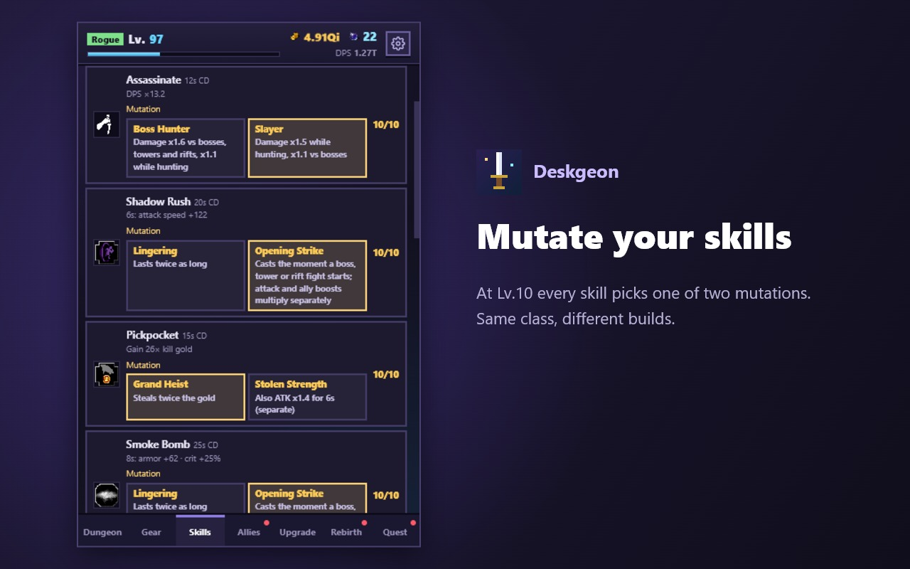

CASE 02 · 게임
Deskgeon 데스크던전
브라우저 툴바 안에 사는 작은 던전 RPG입니다. 팝업을 닫아도 도트 용사는 던전을 한 층씩 내려가고, 다시 열면 그동안 모은 골드와 전리품을 들고 기다립니다.
- 장르
- 방치형 던전 RPG
- 플랫폼
- Chrome 확장
- 가격
- 무료 · 광고 없음
- 언어
- 한·영·일·중
Chrome 웹 스토어 · 홈페이지 · 패치노트


무엇을 만드는가
바쁜 하루 틈틈이 몇 초만 들여다보면 되는 게임을 목표로 했습니다. 새 장비를 끼우고, 스킬을 찍고, 모아 둔 소환석으로 동료를 뽑은 뒤 다시 하던 일로 돌아가면 됩니다. 창을 닫거나 브라우저를 꺼도 최대 12시간까지 진행이 쌓입니다.
깊이 파고들고 싶은 사람을 위해서는 네 직업의 빌드, 동료 편성과 각성, 전설 장비의 고유 효과, 그리고 환생과 윤회를 거듭하는 장기 성장을 쌓아 두었습니다. 그래픽은 공개 라이선스(CC0) 도트 타일셋을 바탕으로 합니다.
작게 시작해 계속 붙였다
처음에는 직업을 고르고 층을 내려가는 단순한 방치형 게임이었습니다. 버전이 오를 때마다 동료 소환, 세 가지 탑, 차원 균열과 룬, 원정대, 펫, 영혼무기, 코스튬처럼 「돌아올 이유」를 하나씩 더했습니다. 바뀐 내용은 매번 패치노트로 공개합니다.
- 하루 몇 초를 존중한다. 고르지 않은 선택지 이벤트는 두 시간 뒤 안전한 기본값으로 지나가서 방치 진행을 막지 않습니다.
- 자동화는 진행에 따라 열린다. 스킬 배분부터 보스 재도전, 강화, 유물 구매, 환생까지 차례로 자동 진행을 켤 수 있습니다.
- 저장은 잃지 않게. 크롬 계정과 구글 드라이브 동기화, 세이브 코드, 최근 백업 여섯 개를 지원합니다.
숫자는 시뮬레이션으로 맞춘다
방치형 게임은 숫자가 금방 수십 자리까지 커집니다. 직업과 플레이 스타일(평타·스킬·동료 중심)이 서로 비슷한 힘을 내는지 감으로 맞추기 어려워서, 게임 안에 짧은 전투 시뮬레이션을 넣었습니다. 스타일 조합 후보를 돌려 보고 더 센 쪽을 고르거나, 「추천 세팅 찾기」로 플레이어에게 보여 줍니다. 이 계산은 화면이 멈추지 않도록 작은 시간 조각으로 나눠 돌립니다.
수치 조정은 AI 코딩 에이전트와 함께 했습니다. 예를 들어 높은 층에서 도적의 평타 스타일이 유독 약하다는 문제를 시뮬레이션 수치로 확인하고, 직업별 보정값을 따로 두어 차이를 좁혔습니다.
지금 어디까지 왔나
- Chrome 웹 스토어에 무료로 공개해 운영하고 있습니다. 광고와 과금은 없습니다.
- 버전 5.x대에서 업데이트를 이어 가고 있으며, 안드로이드 등 다른 플랫폼으로 넓히는 작업을 하고 있습니다.